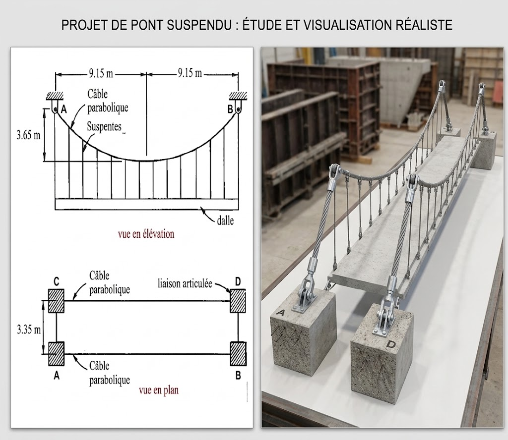

① Énoncé du problème
Trouver la flèche f à mi-travée d’une chaîne de longueur égale à 30 m, de poids linéique 25 kN/m, articulée à ses extrémités distantes de 15 m et situées au même niveau.
📷 Figure du problème

② Comprendre le phénomène physique
Pourquoi la chaîne devient-elle une chaînette ?
La chaîne est flexible et ne résiste pas aux moments de flexion. Elle travaille exclusivement en traction. Sous l'effet de son propre poids distribué uniformément le long de sa longueur réelle, la forme d'équilibre statique exacte prise par la chaîne est une chaînette (catenary).
Les deux appuis $A$ et $B$ sont au même niveau horizontal. Par symétrie, le point le plus bas $O(0,0)$ de la chaîne se situe exactement à mi-portée ($x = 0$), où la pente est strictement nulle ($\frac{dy}{dx} = 0$).
③ Démonstration mathématique de chaque relation
A. Équations exactes de la Chaînette
Soit un tronçon de câble $OM$ de longueur $s$, reliant le point bas $O(0,0)$ au point $M(x,y)$. Les forces appliquées sont la tension horizontale $H$ en $O$, la tension $T(x)$ inclinée d'un angle $\theta$ en $M$, et le poids du tronçon $W = q \cdot s$.
En effectuant le rapport des deux équations :
En dérivant par rapport à $x$ et en utilisant la relation géométrique $ds = \sqrt{dx^2 + dy^2}$ :
En posant $y' = \frac{dy}{dx}$, on sépare les variables :
En intégrant avec la condition initiale $y'(0) = 0$ :
Puisque $\frac{dy}{dx} = \frac{s}{a}$, on en déduit directement l'équation de la demi-longueur d'arc :
Pour l'appui situé à la demi-portée $x = \frac{L}{2}$, la demi-longueur est $s_0 = \frac{S}{2}$ :
En intégrant $y'(x) = \sinh\left(\frac{x}{a}\right)$ avec la condition $y(0) = 0$ :
La flèche $f$ est la hauteur au niveau de la demi-portée $x = \frac{L}{2}$ :
Par le théorème de Pythagore sur le triangle des forces :
B. Démonstration des formules de l'Approximation Parabolique
Pour une faible flèche, la charge est considérée comme uniforme le long de l'axe horizontal $x$.
L'équilibre des moments au centre de la travée donne :
L'intégrale de longueur d'arc de la parabole est :
Utilisons le développement limité $(1 + u)^{1/2} \approx 1 + \frac{1}{2}u$ avec $u = \frac{64 f^2}{L^4} x^2$ :
④ Animation 2D interactive
Faites varier le curseur ci-dessous pour voir l'impact de la flèche sur les composantes de forces.
Variation de la flèche $f$
⑤ Modèle 3D interactif
Cliquez et faites glisser la souris pour faire pivoter le modèle. Utilisez la molette pour zoomer.
⑥ Démarche de résolution
⑦ Solution Numérique Détaillée Étape par Étape
Méthode 1 — Calcul Exact de la Chaînette
En appliquant la formule de la demi-longueur $s_0 = a \sinh\left(\frac{x_B}{a}\right)$ :
Posons $u = \frac{7.5}{a} \implies a = \frac{7.5}{u}$. L'équation devient :
Appliquons l'algorithme récursif de Newton-Raphson $u_{k+1} = u_k - \frac{g(u_k)}{g'(u_k)}$ avec $g'(u) = \cosh(u) - 2$ :
- Initialisation $u_0 = 2.00000$ : $$g(2.0) = \sinh(2.0) - 4 = -0.37314$$ $$g'(2.0) = \cosh(2.0) - 2 = 1.76220$$ $$u_1 = 2.0 - \frac{-0.37314}{1.76220} = 2.21171$$
- Iteration 1 ($u_1 = 2.21171$) : $$g(2.21171) = 0.07699, \quad g'(2.21171) = 2.61021$$ $$u_2 = 2.21171 - \frac{0.07699}{2.61021} = 2.17772$$
- Iteration 2 ($u_2 = 2.17772$) : $$g(2.17772) = 0.00097, \quad g'(2.17772) = 2.47006$$ $$u_3 = 2.17772 - \frac{0.00097}{2.47006} = \mathbf{2.17733}$$
La valeur convergée est $u \approx 2.17733$.
Calcul de $\cosh(u)$ :
$$\boxed{f \approx 11.95\text{ m}}$$
- Poids d'une demi-chaîne ($V$) : $$V = q \cdot s_0 = 25\text{ kN/m} \times 15\text{ m} = \mathbf{375\text{ kN}}$$
- Tension horizontale au point bas ($H$) : $$H = q \cdot a = 25 \times 3.4446 = \mathbf{86.12\text{ kN}}$$
- Tension maximale aux appuis ($T_{\max}$) : $$T_{\max} = \sqrt{H^2 + V^2} = \sqrt{86.12^2 + 375^2} = \mathbf{384.76\text{ kN}}$$
Méthode 2 — Approximation Parabolique
Utilisons la formule approchée $S \approx L \left[1 + \frac{8}{3}\left(\frac{f}{L}\right)^2\right]$ :
Le document original indique $f = 216.87\text{ N}$. Cette valeur comporte deux anomalies fondamentales :
1. Erreur d'unité : Une flèche $f$ est une distance ($\text{m}$) et non une force ($\text{N}$).
2. Limitation géométrique : Pour une chaîne de $30\text{ m}$ sur une portée de $15\text{ m}$, la flèche géométrique maximale absolue (chaîne complètement repliée en deux) ne peut dépasser $15\text{ m}$. La valeur physique réelle calculée selon la statique est **$11.95\text{ m}$**.
Tableau Comparatif Synthétique
| Grandeur | Chaînette (Exact) | Parabole (Approché) | Écart relatif |
|---|---|---|---|
| Flèche $f$ | 11.95 m | 9.19 m | 23.1% |
| Tension Horizontale $H$ | 86.12 kN | 76.54 kN | 11.1% |
| Tension Maximale $T_{\max}$ | 384.76 kN | 382.72 kN | 0.5% |